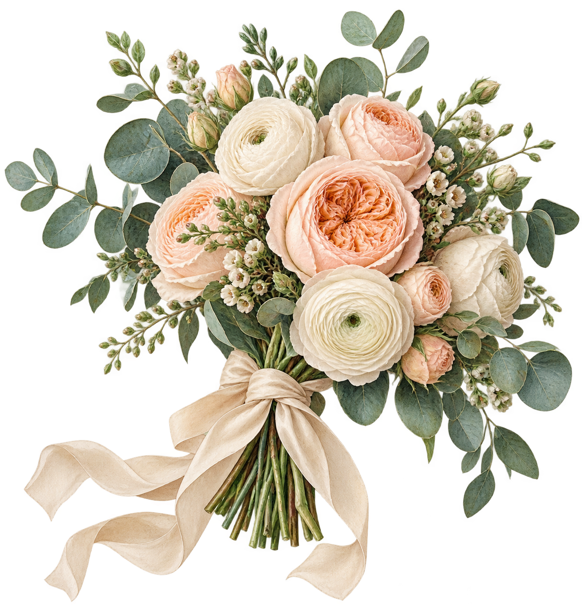
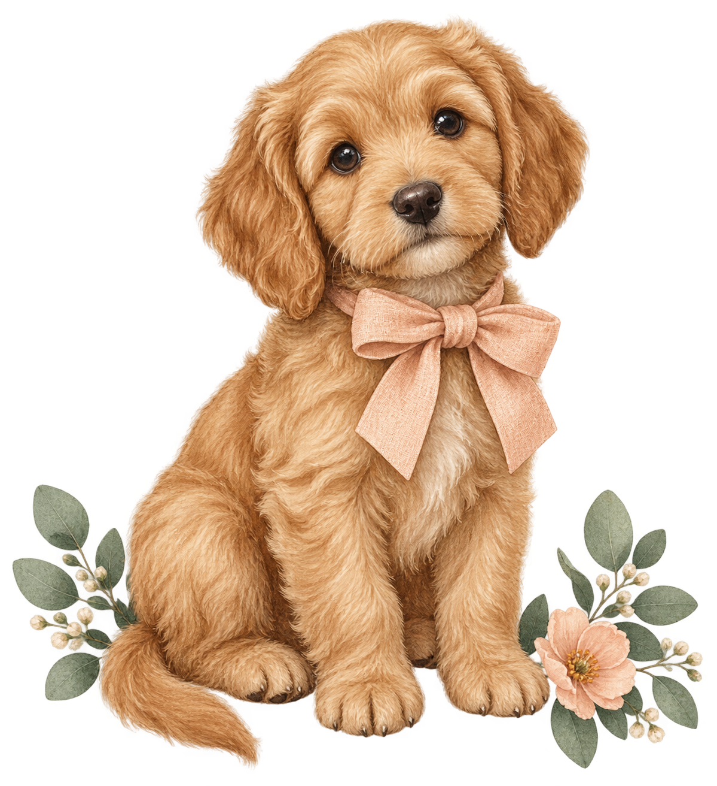
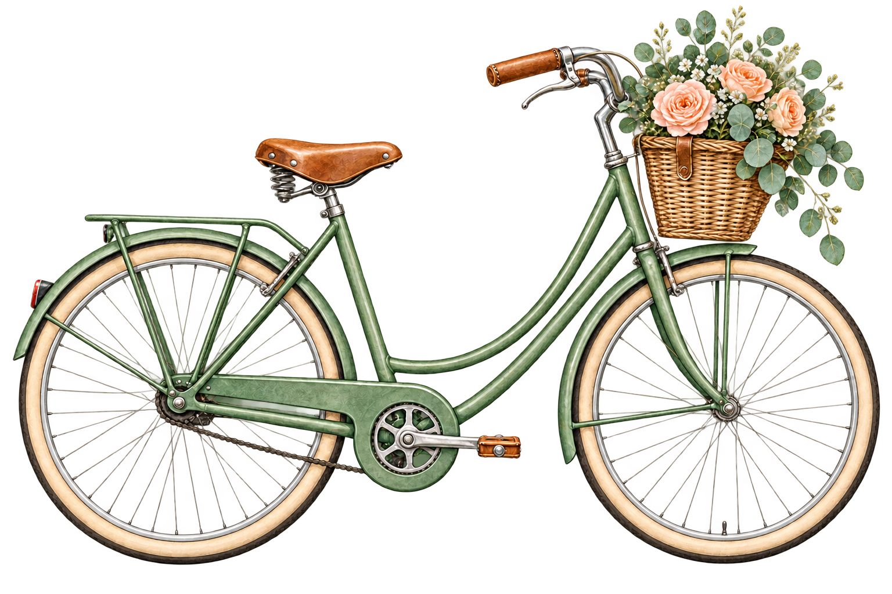
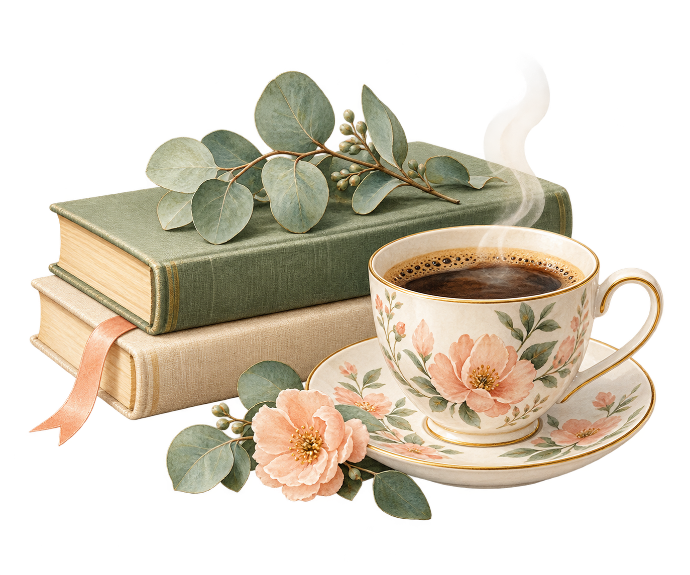
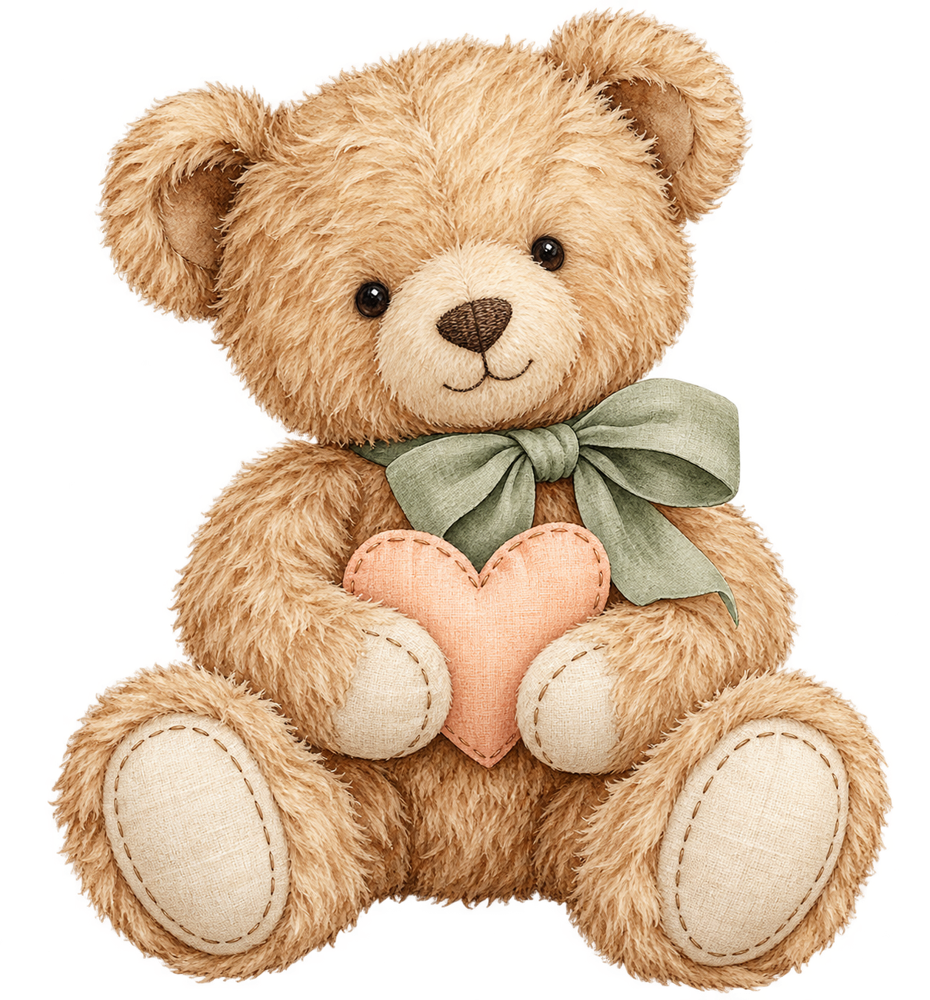
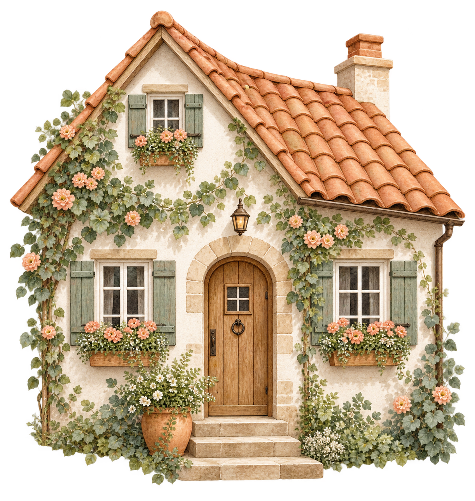

Buquê botânico1222 × 1287 px · PNG com alphaArquivo inteiro a 300 ppi: 10.35 × 10.9 cmBaixar PNG original
Companheiro caramelo1199 × 1312 px · PNG com alphaArquivo inteiro a 300 ppi: 10.15 × 11.11 cmBaixar PNG original
Passeio florido1536 × 1024 px · PNG com alphaArquivo inteiro a 300 ppi: 13.0 × 8.67 cmBaixar PNG original
Café e boas histórias1374 × 1145 px · PNG com alphaArquivo inteiro a 300 ppi: 11.63 × 9.69 cmBaixar PNG original
Afeto de ursinho1209 × 1300 px · PNG com alphaArquivo inteiro a 300 ppi: 10.24 × 11.01 cmBaixar PNG original
Lar em flor1222 × 1287 px · PNG com alphaArquivo inteiro a 300 ppi: 10.35 × 10.9 cmBaixar PNG original